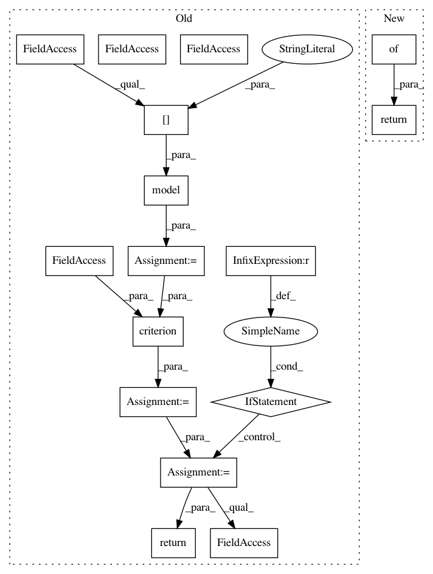

8bafae2ee7044529543768eec63d8460d894f5c6,fairseq/multiprocessing_trainer.py,MultiprocessingTrainer,_async_valid_step,#MultiprocessingTrainer#Any#Any#Any#,225
Before Change
return 0
self.model.eval()
self._sample = self.criterion.prepare(self.model, self._sample)
net_output = self.model(**self._sample["net_input"])
loss = self.criterion(net_output, self._sample)
if grad_denom is not None:
loss /= grad_denom
return loss.data[0]
def get_lr(self):
Get the current learning rate.
return self.call_async(0, "_async_get_lr").gen()
After Change
def _async_valid_step(self, rank, device_id, grad_denom):
if self._sample is None:
return {}
self.model.eval()
return self.criterion(self.model, self._sample, grad_denom)
def get_lr(self):
In pattern: SUPERPATTERN
Frequency: 4
Non-data size: 16
Instances
Project Name: elbayadm/attn2d
Commit Name: 8bafae2ee7044529543768eec63d8460d894f5c6
Time: 2017-10-19
Author: myleott@fb.com
File Name: fairseq/multiprocessing_trainer.py
Class Name: MultiprocessingTrainer
Method Name: _async_valid_step
Project Name: pytorch/fairseq
Commit Name: 8bafae2ee7044529543768eec63d8460d894f5c6
Time: 2017-10-19
Author: myleott@fb.com
File Name: fairseq/multiprocessing_trainer.py
Class Name: MultiprocessingTrainer
Method Name: _async_train_step
Project Name: elbayadm/attn2d
Commit Name: 8bafae2ee7044529543768eec63d8460d894f5c6
Time: 2017-10-19
Author: myleott@fb.com
File Name: fairseq/multiprocessing_trainer.py
Class Name: MultiprocessingTrainer
Method Name: _async_valid_step